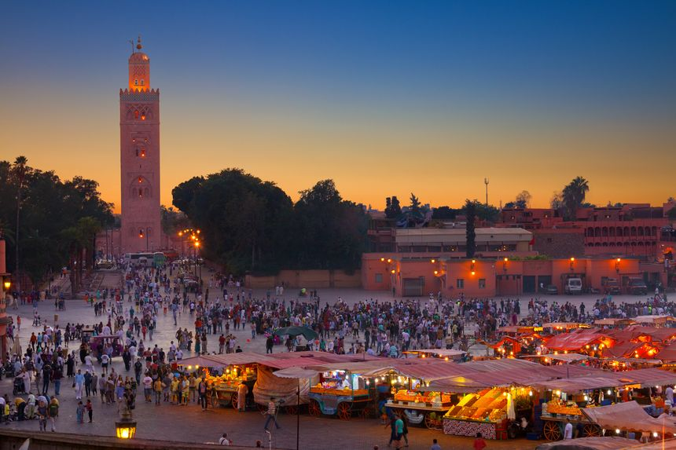

Top Destinations
-
Chefchaouen
Known as the "Blue Pearl," Chefchaouen is a small mountain town famous for its striking blue-painted buildings. Nestled in the Rif Mountains, it's a haven for photographers and travelers seeking a tranquil escape.
-

Marrakech: Place Jemaa el-Fna
Marrakech, the "Red City," is a vibrant hub of culture and history. The Jemaa el-Fna square is the city's heartbeat, filled with storytellers, food stalls, and performers that come alive every evening.
-
Fes: Chaouwara Tanneries
The Chaouwara Tanneries in Fes are a testament to Morocco's centuries-old leather-making tradition. Visitors can witness the fascinating dyeing process while enjoying a panoramic view of the vibrant dye pits.
-

Essaouira
Essaouira is a coastal gem offering stunning beaches, a historic medina, and a laid-back vibe. Known for its winds, it’s a hotspot for windsurfing and a great retreat for seafood lovers.